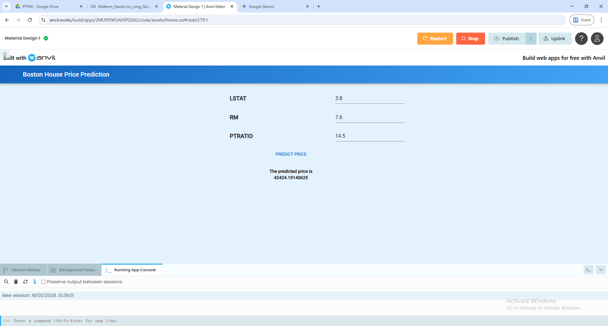
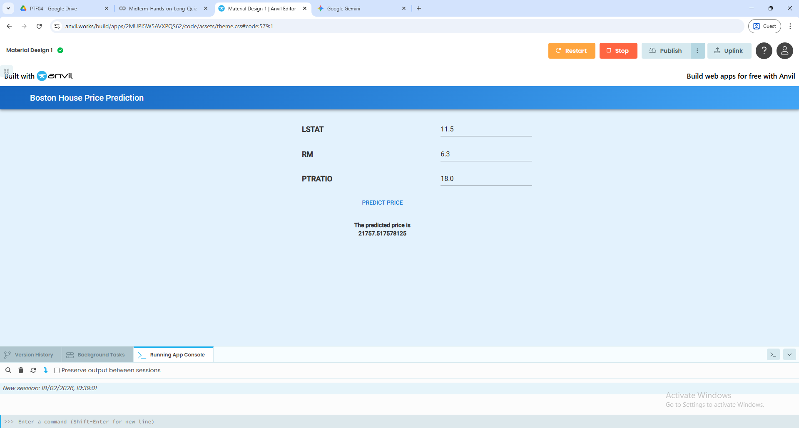
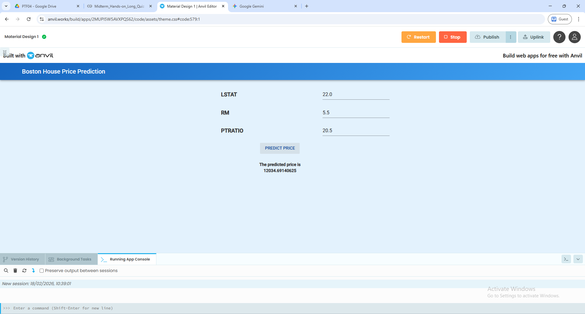

Midterm - Hands-on Long Quiz 1 (Boston House Price Prediction)
Description: A data science and deep learning project acting as a Junior Data Scientist for a real estate developer. The goal was to understand factors influencing house prices and build a neural network to estimate property values.
Objectives/Purpose:
- Explore and clean the Boston Housing dataset (506 rows, 14 columns).
- Perform feature selection using a correlation heatmap.
- Build, train, and evaluate a Neural Network (NN) regression model using TensorFlow/Keras.
- Deploy real-world predictions using scaled sample house data.
Key Features
- Data-Driven Feature Selection: Utilized Seaborn correlation heatmaps to systematically identify the three most influential predictors of house prices:
LSTAT,RM, andPTRATIO. - Deep Learning Implementation: Designed a Keras
Sequentialmodel withDenselayers to map the selected features to a continuous price output. - Epoch Comparative Analysis: Evaluated model performance (MAE, RMSE, R-squared) at different training lengths (100 vs. 300 epochs) to monitor learning improvements and potential overfitting.
Important Code Blocks
1. Data Loading and Preparation
This snippet demonstrates loading the dataset and standardizing the target variable name to ensure clarity during the modeling phase.
# Load Boston dataset from local Colab folder
df = pd.read_csv('/content/Boston1.csv')
# Rename the target column to PRICE for clarity
df.rename(columns={'medv': 'price'}, inplace=True)2. Single House Prediction Pipeline
After training, the model requires input features to be scaled in the exact same manner as the training data before making a prediction. The prediction is then converted back to actual dollar amounts.
# RM, LSTAT, PTRATIO
sample_house = np.array([[6.0, 12.0, 15.0]])
sample_house_scaled = scaler.transform(sample_house)
# Make prediction
predicted_price = model.predict(sample_house_scaled)
# Convert from $1000s to actual dollars
predicted_price_actual = predicted_price[0][0] * 100_000
print('Predicted House Price (in dollars):', predicted_price_actual)Screenshots & Results



Project Highlights:
- Successfully identified that no columns contained null values, streamlining the preprocessing phase.
- Configured a
StandardScalerto ensure the neural network weights updated evenly across features with different scales.
Tools & Technologies
- Languages: Python 3
- Libraries/Frameworks: TensorFlow, Keras (Sequential API), Pandas (DataFrames), Seaborn/Matplotlib (Heatmaps), Scikit-Learn (StandardScaler, train_test_split)
- Platforms: Google Colab
Challenges & Solutions
Problems Encountered: Identifying the most impactful features from a 14-column dataset can lead to dimensionality issues or noisy data if all features are fed blindly into a neural network.
How I Solved Them: Instead of using all available data, I generated a correlation matrix and heatmap. This visually and mathematically highlighted that LSTAT (lower status of the population), RM (rooms per dwelling), and PTRATIO (pupil-teacher ratio) had the strongest linear relationship with the target variable, allowing for a more efficient and accurate predictive model.
Learning Reflection
What I Learned: I bridged the gap between traditional data analysis (EDA) and deep learning. I learned how crucial data preprocessing (like feature selection and scaling) is before even constructing the neural network layers.
Skills Gained: Interpreting correlation matrices, building Keras Sequential models, tracking model loss across epochs, and transforming normalized predictions back into real-world, interpretable business values (dollars).